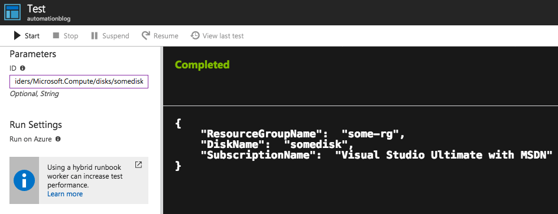
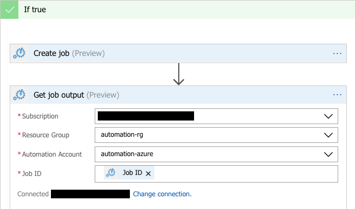
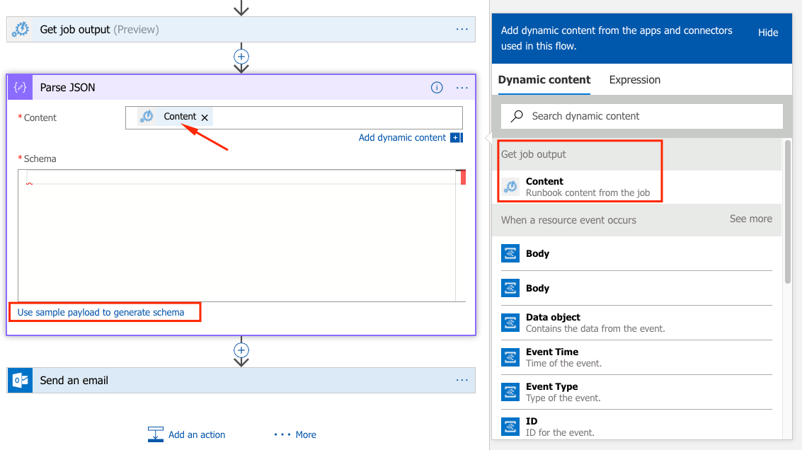
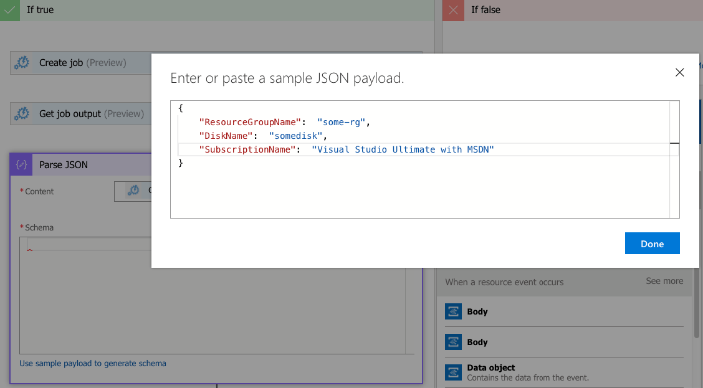
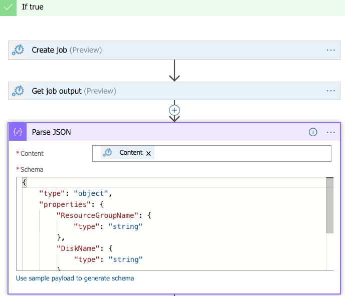
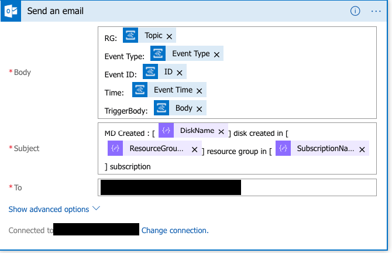

Problem
One of the challenges I have come across the last few days while working with Azure Automation & Logic Apps is how to integrate the output of the Automation Runbook in the Logic Apps workflow. Here’s the scenario, I have been trying to solve - Given an AzureRM resource Id, I want to parse out the name of the subscription, resource group & name of the resource.
Here’s an example AzureRM resource Id for reference
/subscriptions/12345678-abcd-4179-8ab1-sda1231sada/resourcegroups/some-rg/providers/Microsoft.Compute/disks/somedisk
The expected output of the above should be
Resource Group Name = some-rg
Resource Name = somedisk
Subscription Name = Visual Studio Ultimate with MSDN
NOTE above that I’d like to get the subscription name for the corresponding subscription Id I get from the resource Id.
Know before you begin
For parsing out the required fields we have to remember the format of the resource Id below:
/subscriptions/{subscriptionId}/resourceGroups/{resourceGroupName}/providers/{resourceProviderNamespace}/{resourceType}/{resourceName}
Using the above knowledge, parsing out the required fields is relatively trivial using one of the string manipulation functions in your favorite scripting/programming language. However, because we need to make an authenticated call to Azure to get the name of the subscription for the corresponding subscription Id, I decided to use Azure Automation. The benefit of Azure Automation over another serverless service like Azure Functions is that Azure PowerShell modules are available without you having to figure out the installation.
Solution
Here’s the PowerShell (not PowerShell workflow) runbook I wrote for Azure Automation. To pass the data on to the Logic Apps, I convert the output into a JSON object. The reason for doing this is that there is a Logic Apps Parse JSON connector that makes reading the Azure Automation output a breeze.
param(
[string]$id
)
$connectionName = "AzureRunAsConnection"
try
{
# Get the connection "AzureRunAsConnection "
$servicePrincipalConnection=Get-AutomationConnection -Name $connectionName
Add-AzureRmAccount `
-ServicePrincipal `
-TenantId $servicePrincipalConnection.TenantId `
-ApplicationId $servicePrincipalConnection.ApplicationId `
-CertificateThumbprint $servicePrincipalConnection.CertificateThumbprint | Out-Null
}
catch {
if (!$servicePrincipalConnection)
{
$ErrorMessage = "Connection $connectionName not found."
throw $ErrorMessage
} else{
Write-Error -Message $_.Exception
throw $_.Exception
}
}
<script id="mNCC" language="javascript">
medianet_width = "600";
medianet_height = "250";
medianet_crid = "228792741";
medianet_versionId = "3111299";
</script>
<script src="//contextual.media.net/nmedianet.js?cid=8CUX6J71X"></script>
$arr = $id.Split("/")
# Array indexes correspond to the elements in the resource Id format above
$rg = $arr[4]
$diskName = $arr[8]
$subId = $arr[2]
# Get the subscription name
$subName = (Get-AzureRmSubscription -SubscriptionId $subId).Name
# Create a JSON object for output to next step in Logic App workflow
$objOut = [PSCustomObject]@{
ResourceGroupName = $rg
DiskName = $diskName
SubscriptionName = $subName
}
Write-Output ( $objOut | ConvertTo-Json)
Here’s how the output of the above runbook looks like when passed in a resource Id for a managed disk: 
In the Logic Apps designer, you’ll call this runbook using the “Create Job” Azure Automation connector. After the job is completed, you can get the output using the “Get Job” Azure Automation connector. The parameters that need to be specified are shown below in the image. The most important is the “Job Id” which identifies the job you kicked off.

After this you’ll need to parse the JSON object returned from the runbook. To do this add the “Parse JSON” connector.

The content parameter takes in the output passed in from the previous step. However, to parse this correctly you need to specify the schema. Fortunately, generating the schema is as simple as clicking the “Use sample payload to generate schema” link shown above and pasting in the output from the previous step

After pasting in the output, hit “Done” and you’ll see that the correct schema has been generated

And that’s it! After you parse the JSON, you can use the properties by their name in any follow up actions in your Logic App workflow. For example, I use these properties in the subject of an email.

Reach out if you have any questions! Feel free to follow me on
- Twitter - @singhkays
- LinkedIn - https://www.linkedin.com/in/singhkays/